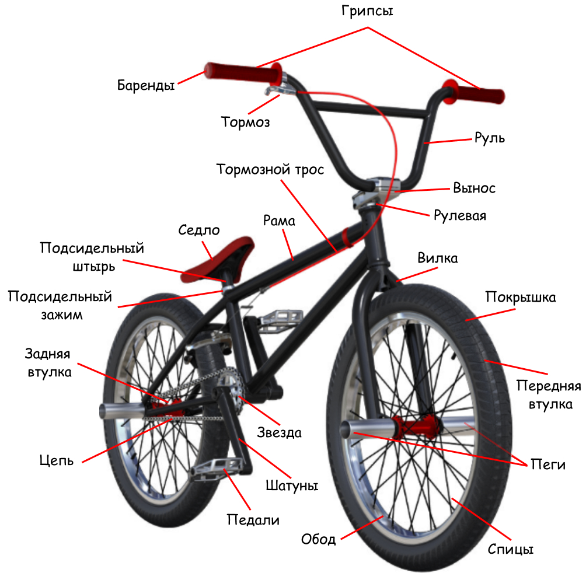
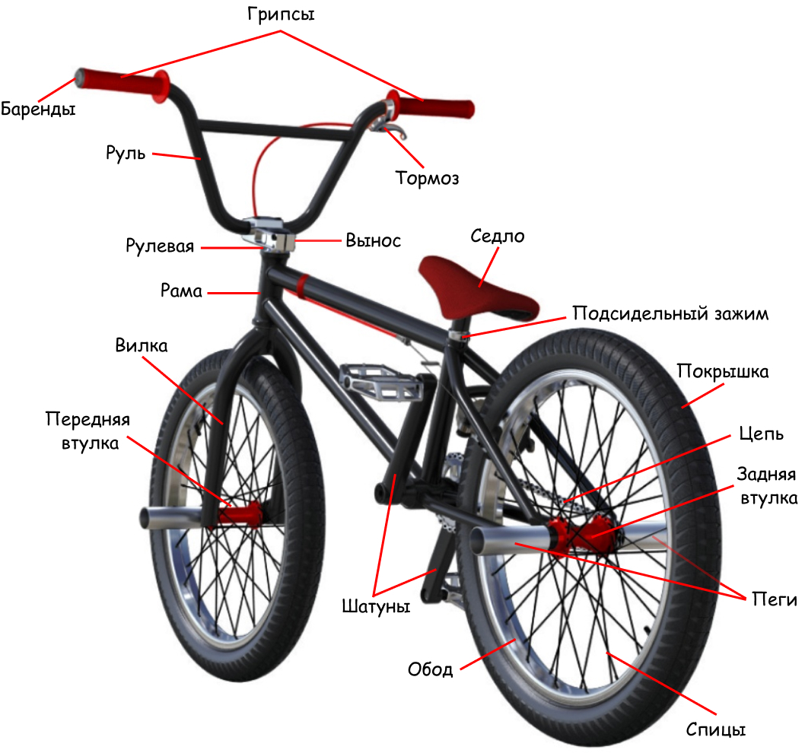

Устройство BMX
BMX — это достаточно экстремальный вид спорта, требующий специализированных велосипедов, разработанных для выполнения трюков и гонок на пересеченной местности. Понимание устройства BMX имеет решающее значение для выбора правильного велосипеда, соответсвующего вашим потребностям и стилю катания, а также обеспечения его оптимальной работы.
В устройстве BMX более чем 20 узлов, основными из которых являются: рама, вилка , руль, колеса и привод. Количество запчастей может варьироваться в зависимости от типа BMX и предпочтений райдера. Например, BMX для рэйса обычно имеют более простые конфигурации, а на фристайловые байки зачастую ставят дополнительные запчасти для выполнения трюков.
Вид спереди
Вид сзади
Рама
Рама - это "скелет" велосипеда, на который крепятся остальные узлы. Рамы для BMX изготавливают из стали, легированной стали (с различными добавками) или, очень редко, из титана. Для изготовления высококлассных рам используют в основном хромомолибденовый сплав (CroMO 4130 или 30ХМА по отечественной маркировке).
Рама состоит из рулевого стакана, верхней трубы, нижней трубы, кареточного узла, подседельной трубы, верхних и нижних перьев и дропаутов - место крепления заднего колеса.
Основные параметры:
- длина верхней трубы (ростовка)
- высота подседельной трубы (стэндовер)
- длина перьев
- угол наклона рулевого стакана
- угол наклона подсидельной трубы


Все параметры рамы пишут в дюймах. Рамы делятся на парковые и стритовые. И те и те используют также в дëрте. Парковые - более низкие и иногда имеют удлинëнные перья. Стритовые - высокие и обычно короткие, что даëт им большую маневренность при вращениях и трюках на плоскости.
Седло
Седло - это просто седло. Сёдла изготавливаются из пластика, алюминия, хромомолибдена и искуственной кожи или замши.
По конструкции:
- рейл (rail) - имеет две рамки из хромомолибдена, которые крепятся в специальный зажим на подседельном штыре. Можно изменять не только наклон седла, но и двигать его вперёд и назад.
- пивотал (pivotal) - настройка осуществляется с помощью одного болта, однако меняется только наклон седла. Имеет отверстие под крепление с подседельным штырем сверху
- трипод (tripod) - настроить его нельзя, а отверстие под крепление с подседельным штырем находится снизу.
- комбо (combo) - седло и подседельный штырь представляют собой одно целое, такое седло можно отрегулировать только по высоте.


По толщине:
- фэт (fat) - толстое, обычно используют в стрите.
- мид (mid) - средняя толщина седла, универсальное.
- слим (slim) - тонкое и легкое седло, используют обычно в парке.


Подседельный штырь
Подседельный штырь - деталь с помощью которой регулируется высота и наклон седла. Характеристиками подседельного штыря является длина, диаметр и вес.
Подседельный зажим
Подседельный зажим - металлический хомут и стягивающий болт, которые фиксируют подседельный штырь в раме, иногда интегрированны.
Вилка
Вилка - деталь узла управления велосипедом, с одной стороны на неё крепится переднее колесо, а, с другой, вынос и руль. Вилки как и рамы изготавливают из стали, легированной стали (с различными добавками) или, очень редко, из титана. В основном используется хромомолибденовый сплав (CroMO 4130 или 30ХМА по отечественной маркировке).
Устройство вилки:
- шток
- ноги
- дропауты - место крепления переднего колеса
- брейкмаунты - место крепления тормозного механизма (бывают съемные, но чаще вообще отсутствуют)
- крепёжный болт
- интегрированное кольцо для рулевой колонки (на старых вилках отдельно)


Основные характеристики вилки:
- диаметр оси передней втулки 14мм или 10мм (гораздо чаще)
- толщина дропаутов 4мм-10мм
- выбег (offset) - расстояние от центра ноги до центра дропаута
- вес (около 900-950 грамм)
Вилки для разных стилей катания:
- Парковые - обычно длинный либо средний выбег (35-25 мм)
- Стритовые - как правило для большей маневренности короткие, поэтому у них обычно средние либо короткие дропауты (26-15 мм)
- Флэтленд - нулевой выбег и наличие брейкмаунтов
Руль
Руль - отвечает за контроль над байком и крепится благодаря выносу.Рули изготавливают из стали, легированной стали (с различными добавками) или, очень редко, из титана. В основном используется хромомолибденовый сплав (CroMO 4130 или 30ХМА по отечественной маркировке).
Виды рулей:
- Двухэлементные - сварен из 2-х труб
- Четырёхэлементные - сварен из 4-х труб
Кроссбар(crossbar) - одна из труб созданая для того, чтобы руль при сильных нагрузках не погнулся и не сломался, т.е. для прочности конструкци.
Характеристики руля:
- ширина (weight) - чем шире, тем легче контролировать байк, но сложнее делать барспины
- подъем (rise) - чем выше, тем проще выдергивать байк
- загиб вверх (upsweep) позволяет меньше отбивать руки при приземлениях
- загиб назад (backsweep) нужен для создания наиболее удобного и естественного для кистей положения
- вес (weight) в среднем 700-800г
Грипсы
Грипсы - резиновые трубки одевающиеся на руль за которые держится райдер. Грипсы бывают с фланцами (ограничителями) и без них. Обычно в комплекте с грипсами идут баренды. Они имеют два параметра - ширина и толщина, обычно указывают в миллиметрах.
Баренды
Баренды - это заглушки для руля. Они препятствуют проникновению грязи внутрь руля и защищают райдера от травм при выполнении трюков. Бывают пластиковыми или алюминиевыми.
Узкая часть барендов вставляется в руль, а широкая фиксирует грипсу снаружи. Некоторые баренды представляют собой кольцо, одевающееся на руль и фиксирующееся на нем с помощью одного или нескольких стопорных болтов.
Тормоз
Тормоз создан для остановки движения велосипеда и состоит из нескольких узлов изготовленных из пластика, алюминия и стали.
Для вращения руля на 360 и более градусов без риска запутать тросики используется гироротор. А часто тормоза и вовсе отсутствуют, и тогда райдер тормозит ногой о землю или покрышку. Катание без тормозов называется "брейклесс"(brakeless).
Характеристики:
- длина тормозной ручки
- форма тормозной ручки
- место крепления тормозного механизма (нижние/верхние перья)
Вынос
Вынос - деталь, держащая руль и вилку в рулевом стакане. Основным материалом для производства выноса является алюминий. Современные выносы обычно выфрезерованы (вырезаны) из цельного куска металла.
Составляющими выноса являются корпус, крышка и болты. На штоке вилки вынос крепится на два болта, а крышка, под который держится руль - на 4 болта.
Виды выносов:
- топлоад (top load) - вынос с отрицательным подъемом
- фронтлоад (front load) - вынос с подъемом вверх
Рулевая
Рулевая - два подшипника, находящихся в рулевом стакане рамы, благодаря которым вращается вся передняя часть байка - руль, вилка и переднее колесо. Рулевые колонки изготавливаются в основном из алюминия.
Характеристики:
- наклон грани подшипника
- диаметр рулевой
Колёса
Колёса являются важной частью BMX, потому что они напрямую отвечают за движение байка. Размер всегда указывается в дюймах и подбирается под рост райдера, как рама. Основные ростовки колёс можно увидеть ниже:
Колёса состоят из следующих деталей: обода, спицы, камеры, покрышки и втулки. Также иногда ставятся хабгарды и пеги.
Многие бренды предлагают покупать колёса сразу в сборе (обода/втулки/спицы), однако можно купить отдельно каждую запчасть и попросить в мастерской их собрать.
Обода
Обода - стальной обруч, зачастую в разрезе имеет П-образную форму, в своих стенках держит покрышку, а на лицевой стороне имеет отверстия для нипелей, держащих спицы. Основным материалом для производства ободов является алюминий серий 6061 и 7005. Алюминиевый сплав даёт лучшее сочетание легкости и прочности.
Характеристики:
- Вес
- Высота
- Ширина
- Количество перегородок (одинарные/двойные/тройные)
- Количество каналов (одноканальные/трёхканальные/пятиканальные)
- Усиленность отверстий для спиц (пистонированные/непистонированные)
- Скруглённость профиля
Спицы
Спицы - часть колеса объединяющая обод со втулкой в единую конструкцию. Спицы производятся в основном из стали и иногда из алюминия. Основной стандарт колеса - 36 спиц, однако чтобы узнать нужную вам длину стоит воспользоваться калькулятором спиц, которых очень много на просторах интернета.
Конструктивно спица состоит из двух частей - это непосредственно сама спица и ниппель. Основные характеристики у спицы это длина, сечение и вес, у ниппеля - длина и вес.
Камеры
Камеры - это основной расходник для вашего велосипеда, особенно в тот момент, когда вы прокололи колесо и необходимо ее быстро заменить, чтобы продолжить катание. У всех современных камер есть автониппель. Отличаются камеры лишь шириной установленной производителем. У каждого уважающего себя райдера обязательно должно быть в запасе пару камер на все случаи жизни, будь то сильный прокол, который не возможно заклеить обычной заплаткой или помочь своему другу-райдеру в неприятной ситуации.
Особо стильные райдеры ставят себе красивые и необычные нипеля, например в виде игровых костей, пулей, гранат или с различными изображениями
Покрышки
Покрышки - отвечают за сцепление колес с поверхностью и устанавливаются сверху камер закрепляясь под ободом. В соновном они изготавливаются из резины, или кевлара. Покрышка состоит из двух частей - непосредственна сама покрышка (резина) и корд (стальной или кевларовый). Корд удерживает покрышку на ободе. Покрышки со стальным кордом тяжелее, но дешевле, а с кевларовым легче, но дороже.
Характеристики:
- Вес (около 400 - 500 грамм)
- Ширина (от 1.75" до 2.4")
- Максимально допустимое давление
- Рисунок протектора
Передняя втулка
Передняя втулка - это "скелет" велосипеда, на который крепятся остальные узлы. Рамы для BMX изготавливают из стали, легированной стали (с различными добавками) или, очень редко, из титана. Для изготовления высококлассных рам используют в основном хромомолибденовый сплав (CroMO 4130 или 30ХМА по отечественной маркировке).
Задняя втулка
Задняя втулка - это "скелет" велосипеда, на который крепятся остальные узлы. Рамы для BMX изготавливают из стали, легированной стали (с различными добавками) или, очень редко, из титана. Для изготовления высококлассных рам используют в основном хромомолибденовый сплав (CroMO 4130 или 30ХМА по отечественной маркировке).
Хабгарды
Хабгарды - это "скелет" велосипеда, на который крепятся остальные узлы. Рамы для BMX изготавливают из стали, легированной стали (с различными добавками) или, очень редко, из титана. Для изготовления высококлассных рам используют в основном хромомолибденовый сплав (CroMO 4130 или 30ХМА по отечественной маркировке).
Пеги
Пеги - это "скелет" велосипеда, на который крепятся остальные узлы. Рамы для BMX изготавливают из стали, легированной стали (с различными добавками) или, очень редко, из титана. Для изготовления высококлассных рам используют в основном хромомолибденовый сплав (CroMO 4130 или 30ХМА по отечественной маркировке).
Привод
Привод (трансмиссия) - механизм велосипеда, которым мы приводим его в движение. Состоит из следующих комплектующих: цепь, звезда, каретка, шатуны и педали.
Цепь
Цепь - звенья(линки) с подшипниками внутри, соединяющие звезду с задней втулкой. .
Типы цепи:
- Классическая - полнозвеньевая цепь
- Хафлинк (halflink) - два звена равны одному полному звену обычной цепи, что дает преимущество при ее установке, а именно позволяет сделать ее необходимой длины.
Характеристики:
- Длина звена - это расстояние между пинами стандарт которого 1/2"
- Ширина цепи - стандарт 1/8", исключение составляют цепи для рейсинга, где используются более тонкие цепи 3/32”.
Звезда
Звезда - это "скелет" велосипеда, на который крепятся остальные узлы. Рамы для BMX изготавливают из стали, легированной стали (с различными добавками) или, очень редко, из титана. Для изготовления высококлассных рам используют в основном хромомолибденовый сплав (CroMO 4130 или 30ХМА по отечественной маркировке).
Каретка
Каретка - это "скелет" велосипеда, на который крепятся остальные узлы. Рамы для BMX изготавливают из стали, легированной стали (с различными добавками) или, очень редко, из титана. Для изготовления высококлассных рам используют в основном хромомолибденовый сплав (CroMO 4130 или 30ХМА по отечественной маркировке).
Шатуны
Шатуны - это "скелет" велосипеда, на который крепятся остальные узлы. Рамы для BMX изготавливают из стали, легированной стали (с различными добавками) или, очень редко, из титана. Для изготовления высококлассных рам используют в основном хромомолибденовый сплав (CroMO 4130 или 30ХМА по отечественной маркировке).
Педали
Педали - это "скелет" велосипеда, на который крепятся остальные узлы. Рамы для BMX изготавливают из стали, легированной стали (с различными добавками) или, очень редко, из титана. Для изготовления высококлассных рам используют в основном хромомолибденовый сплав (CroMO 4130 или 30ХМА по отечественной маркировке).